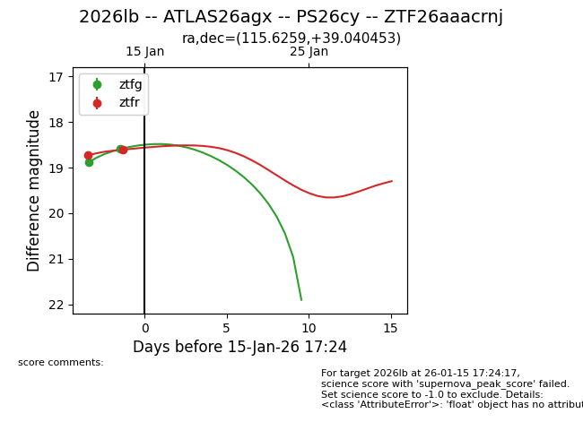
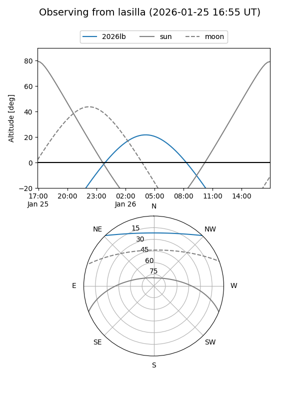
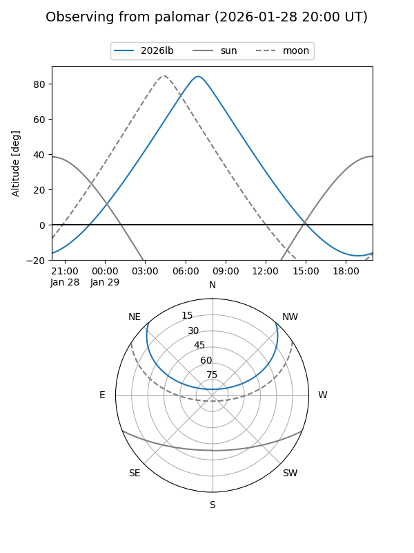
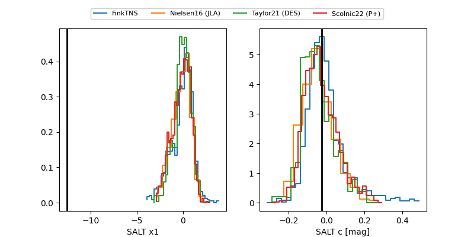

2026lb
Target 2026lb at 2026-01-26 05:21
Aliases and brokers:
FINK: link
Lasair: link
ALeRCE: link
TNS: link
YSE: link
alt names
ZTF26aaacrnj (ztf,fink_ztf)
2026lb (tns,yse)
PS26cy (panstarrs)
ATLAS26agx (atlas)
Coordinates:
equatorial (ra, dec) = 115.6259,+39.04045
equatorial (HMS+DMS) = 07:42:30.23,+39:02:25.63
galactic (l, b) = (180.4463,+26.10145)
Flags:
confirmed ia
Photometry:
last atlasc=18.60, atlaso=18.43, ztfg=18.59, ztfr=18.30
3 atlasc, 5 atlaso, 6 ztfg, 6 ztfr detections
Lightcurve

Visibility


Additional plots
